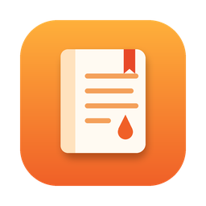

JournalJuice
Private journal for Mac, iPhone and iPad · one-time purchase, no subscription
Support
Questions or problems? Write to alcsernorbert@gmail.com. Please include your device, its system version and what you were doing.
- Sync: JournalJuice syncs through your own iCloud account. Make sure you are signed in to the same Apple Account on every device and that iCloud Drive is turned on.
- Moving from Day One: in Day One choose Settings › Import/Export › Export Day One JSON, unzip the file, then in JournalJuice choose Import and select the unzipped folder. Photos, videos, audio, PDFs, places, weather and tags come along.
- Backups: Export › JournalJuice backup (JSON) saves everything, including media, into one file you can import again.
Privacy
JournalJuice does not collect any data. There are no analytics, no ads, no accounts and no servers of ours.
- Your entries and attachments are stored on your devices and in your own private iCloud database. The developer has no access to them. With iCloud Advanced Data Protection turned on, they are end-to-end encrypted.
- Location is used only when you write, to add the place to the entry. It is stored in your journal and nowhere else.
- Weather is provided by Apple Weather: JournalJuice sends the current location to Apple's WeatherKit service to read the weather, as Apple's privacy policy describes.
- Microphone access is used only while you record a voice note.
Weather data: Weather. Data sources.
Magyarul
Támogatás: írj az alcsernorbert@gmail.com címre. A Day One-ból: Day One › Beállítások › Import/Export › Export Day One JSON, csomagold ki, majd a JournalJuice-ban válaszd az Importálást és a kicsomagolt mappát.
Adatvédelem: a JournalJuice semmilyen adatot nem gyűjt. A bejegyzéseid az eszközeiden és a saját iCloud-fiókodban vannak, a fejlesztő nem fér hozzájuk. A helyet csak a bejegyzéshez adja hozzá, az időjárást az Apple Weather szolgáltatja.
© 2026 Alcser Norbert